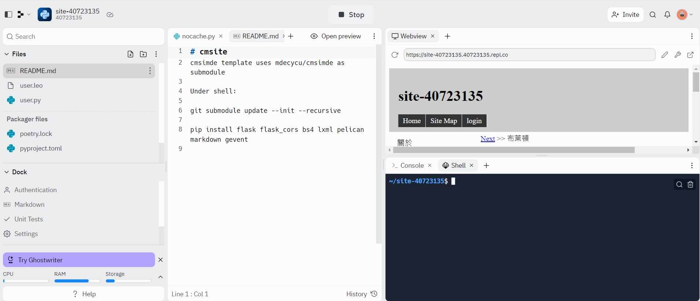

Replit 應用程序式服務器 <<
Previous Next >> W4
W3
1.透過mdecad2022的組織建立個人可以管理的庫(site-Github_帳號)
2.利用replit帳號所啟動的動態網站進入進入內部管理
3.動態轉為靜態網站內容之後，要設置方法與Github庫同步。
之後申請帳號都使用@nfu 電子郵箱
修補課程網站安全疑惑：
目的的：不想讓config/config 帶上密碼後的管理員密碼
執行步驟:
- 必須先在個人的mdecad2022/site-github_帳號庫進入處理
- 第一步就是刪除config/config 設置文件
- 修改 .gitignore 為： https ://raw.githubusercontent.com/mdecad2022/site-41023242/main/.gitignore
- 添加main.py: https://raw.githubusercontent.com/mdecad2022/site-41023242/main/main.py
- 在庫根目錄加入nocache.py，內容如下： https ://github.com/mdecycu/cmsimde/blob/2a41b26b6d9b1446a8b448bb6fb58a6dbb41c867/nocache.py
之後再設計以導入方式，利用個人課程庫內容在replit建立Repl專案。
至於Repl專案，必須在Shell中，執行下面兩條命令：git submodule update --init --recursive
在庫根目錄執行
表示要刪除所有子模型的內容
並安裝啟動cmsimde所需的Python模型：
pip install flask flask_cors bs4 lxml pelican markdown gevent
Replit 專案上的靜態內容同步至原始課程庫教學影片
2b開始在 https://exam.cycu.org建立考賬號。
執行Replit專案過程

在Shell中執行以上紅色粗體的程序模型組程序後，可以打開個人網站並編輯個人網站轉為靜態網站進行遠程操作
然後再行建立考試賬號
Replit 應用程序式服務器 <<
Previous Next >> W4